GenIAus — EY's GenAI auditing assistant, rebuilt from an ignored feature into a co-pilot auditors actually rely on.
ClientErnst & Young
RoleUX Designer · Lead
TeamPM · PO · 10 Developers
01 — The Problem
GenIAus was built by engineers. It showed.
The Problem
A GenAI audit tool EY had already shipped — that auditors avoided because it gave them no hierarchy, no onboarding, no way to learn it.
My Approach
Reframed it from a UI cleanup into a systems-level redesign — 8 decisions, shipped incrementally with a 10-developer team.
GenIAus was live, but nobody could figure out how to use it.
No hierarchy — a global feature buried in a local sidebar
No onboarding, no prompts — no visibility into what the AI could do
Trial and error — in a regulated, high-stakes audit workflow
Adoption was stalling — EY had already invested, audit teams weren't using it
02 — What I Walked Into
A rescue operation, not a greenfield project.
Eight states from the engineer-built beta, annotated during contextual analysis — every Nielsen heuristic violated, each violation compounding the next. Step through each frame to see the failure mode.
Every constraint stacked against a clean rebuild — this had to be a rescue, not a redo.
Engineering-first UI already live
Beta-stage instability
No design system to inherit
Complex regulated domain
Scale pressure into VIA
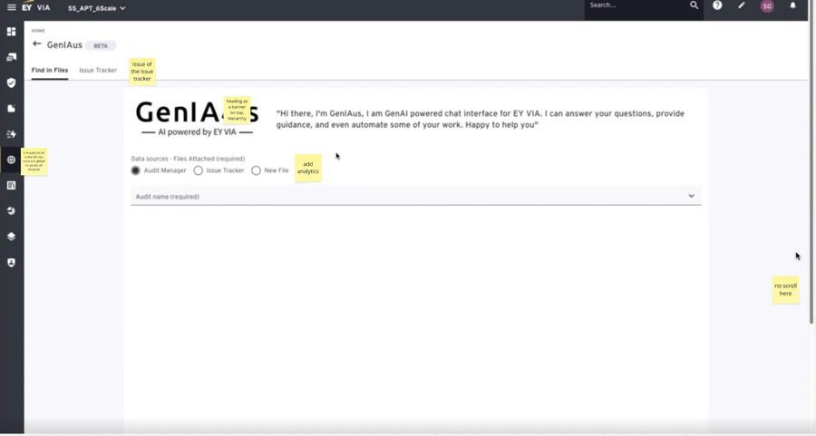
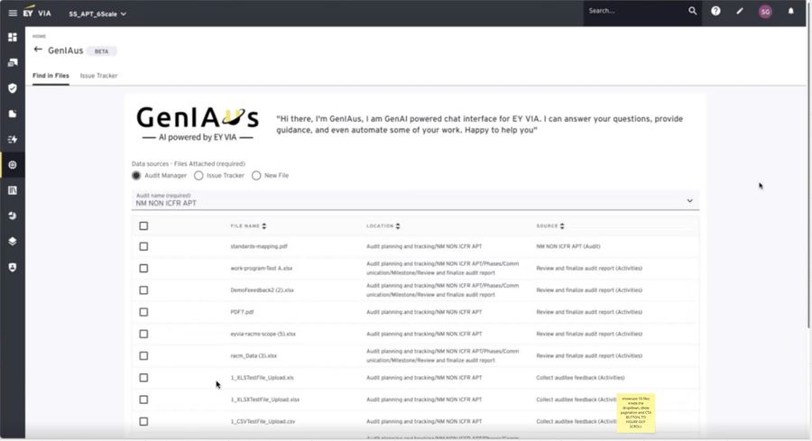
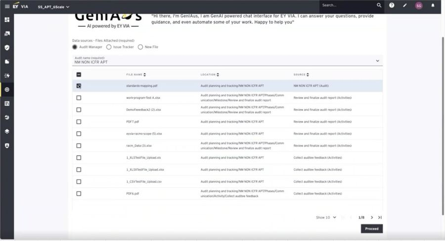
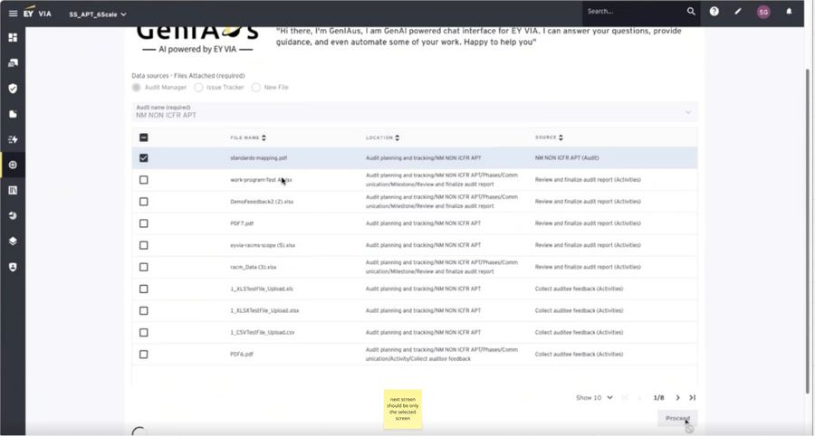
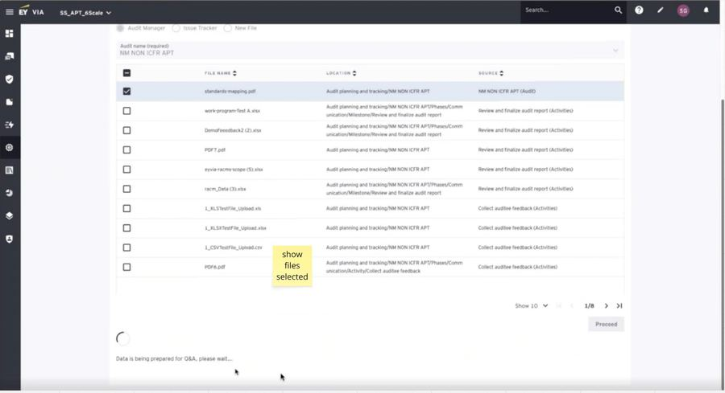
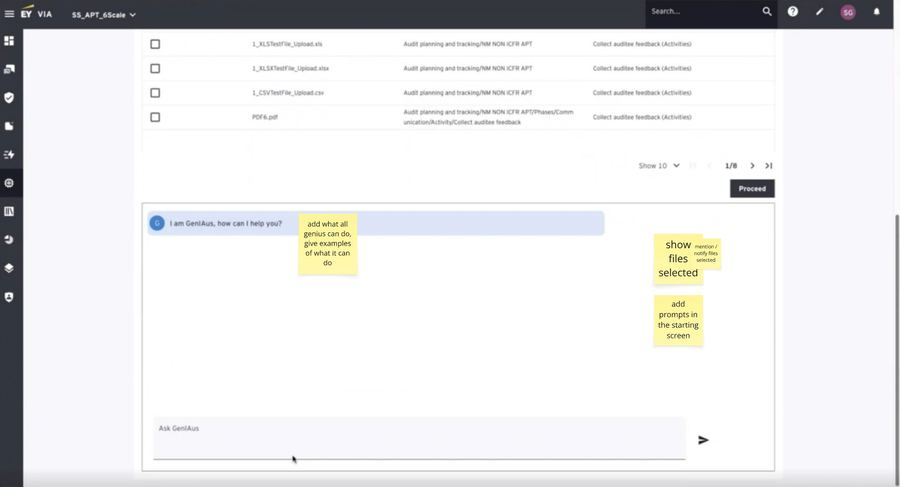
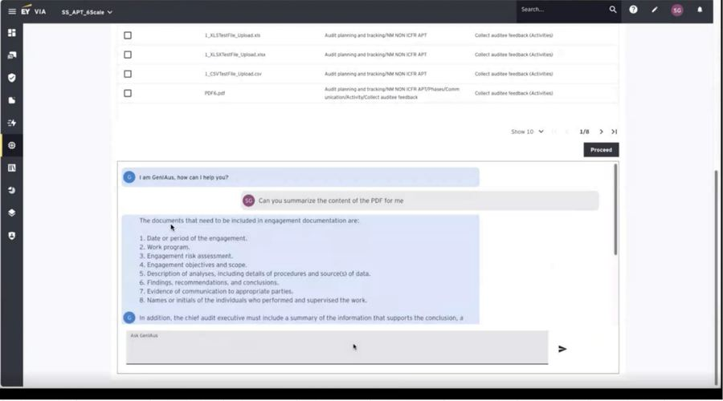
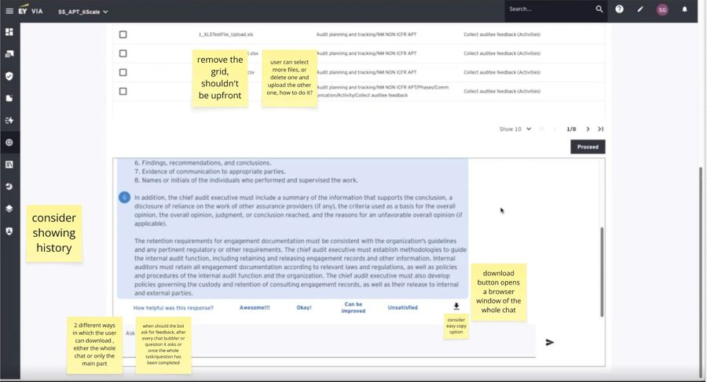
Fig 01 — The beta's landing state. The GenIAus logo is repeated. A decorative brain illustration takes up half the canvas. No hierarchy guides the eye.
01 / 08
03 — My Approach
Systems thinking, not screen design.
I re-framed GenIAus from a collection of AI features into a risk-aware human–AI decision system — built on reusable interaction patterns, contextual AI behaviors, and embedded transparency.
This wasn't a UI cleanup — the problems were structural, so the fix had to be too.
Fig 09The systems thinking framework I used to approach GenIAus — five interconnected layers that ensured every design decision reinforced the whole, not just individual screens.
In regulated domains, users won't adopt tools they can't explain to a regulator. Every design decision had to answer the question: "Could an auditor justify this to their oversight board?"
Fig 10Transforming GenIAus for Success — mapping new workflows, prioritized features, and the design system to five outcome pillars: user-friendly interface, time-saving efficiency, data security compliance, contextual understanding, and AI-powered document analysis.
04 — The Design Sprint
Five days from analysis to clickable prototype.
A structured 5-day design sprint moved the work from analysis to validated structure — divergent before convergent, lo-fi before hi-fi, structure before surface. The carousel below cycles through the sprint's working materials; it advances on its own, but pause to study a frame any time.
5 days, from teardown to a clickable, testable prototype.
Day 1–2
Understand & Define
Contextual analysis + stakeholder interviews defined the core problem.
Day 3
Ideate
Flow variations on Miro, testing structure vs. flexibility.
Day 4
Decide
Evaluated on time-to-value, scalability, buildability.
Day 5
Prototype
Lo-fi to validate structure, then hi-fi in Figma.
"How might we redesign GenIAus so that its AI capabilities are intuitively understood and seamlessly integrated into the auditor's existing workflow?"
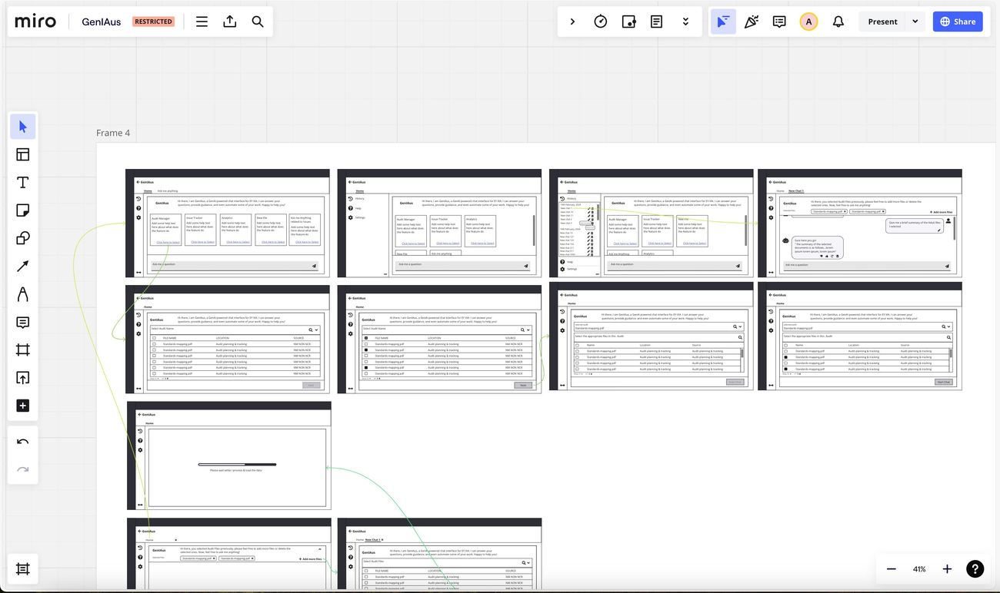
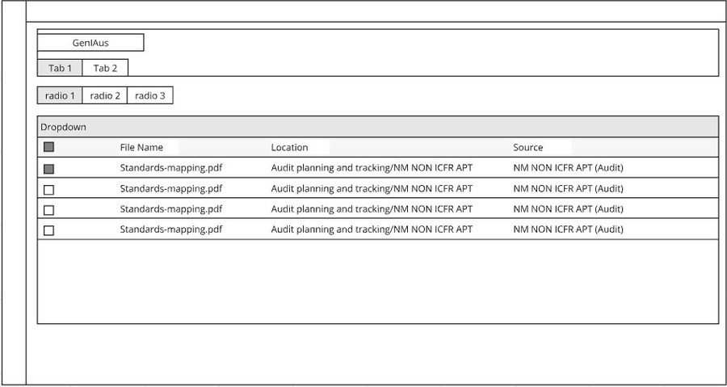
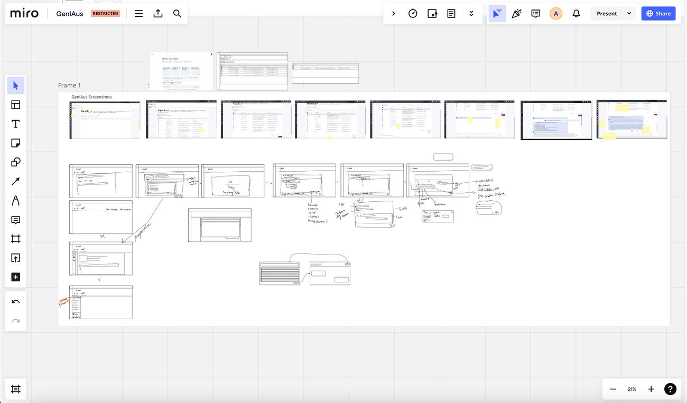
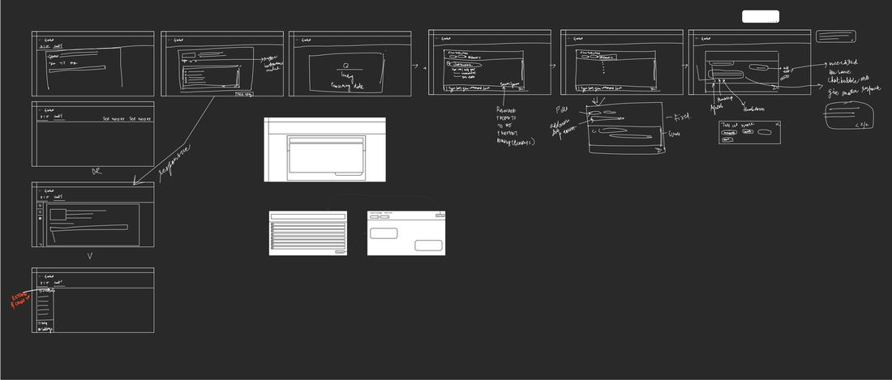
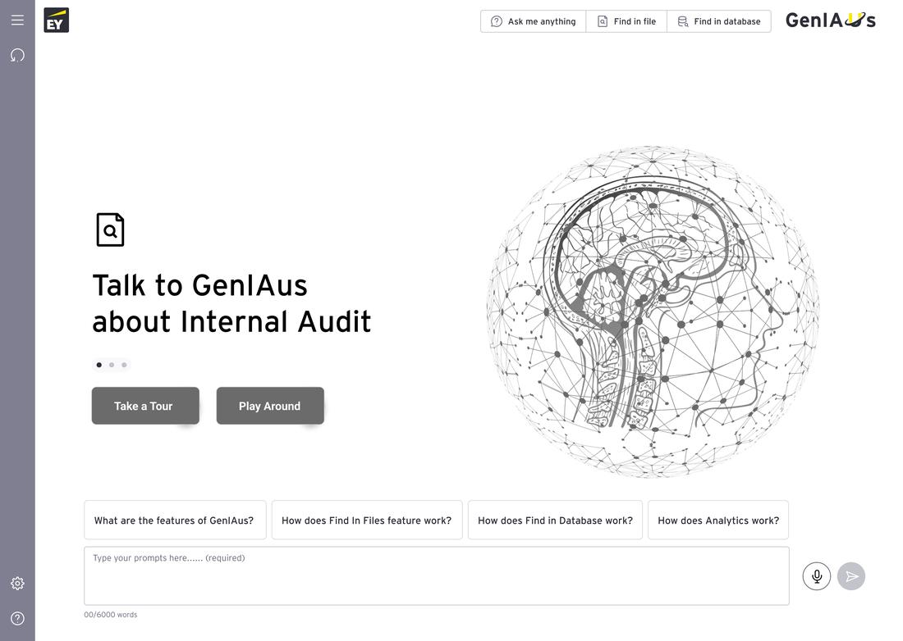
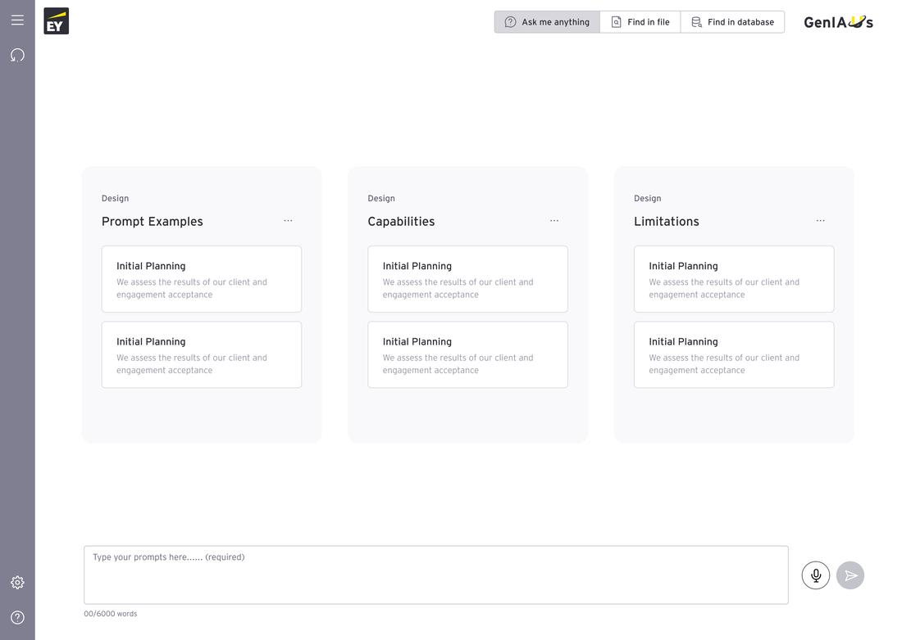
Fig 11 — Lo-fi wireframes on Miro. Setting the user flow before committing to visual design. Each frame represents a different state in the GenIAus interaction model: empty chat, expanded sidebar with history, file selection, processing, results.
01 / 06
05 — Research That Shaped Decisions
Four insights that changed the design.
After the sprint, I led usability testing with audit professionals — the actual end users — using a moderated think-aloud protocol focused on Document Intelligence and Prompt Scaffolding. Insights were synthesized through thematic analysis, empathy mapping, and affinity mapping.
Users couldn't act on what they couldn't see or understand.
Labeling mattered more than expected
"Find in Files" didn't say what it did. Renaming to "Document Intelligence" fixed comprehension immediately.
Users needed to see capabilities first
The empty chat state was a dead end. Structured entry points gave users a mental model before they typed a prompt.
File selection needed progressive disclosure
80+ files in a flat list overwhelmed users. An audit-name dropdown first, then a filtered list, cut decision fatigue.
Trust required transparency
The AI's limitations had to be stated upfront — not legal cover, but what made people willing to engage.
06 — Key Design Decisions
Eight features. Eight specific problems.
Each redesigned feature was a deliberate response to a specific insight — the problem, the design decision, and the reasoning behind it.
8 problems, 8 targeted fixes — the problem, the decision, and why it works.
01
Smart Quickstart — getting users productive without confusion.
AccessibilityReduce cognitive load
The Problem
Empty chat, no guidance
Low-literacy users didn't know where to start
High-literacy users didn't know what this AI could do
The Decision
Landing state that doubles as onboarding + navigation
4 capability entry points, each with icon + label
Ask me anything, Document Intelligence, Q&A in Issue Tracker, Q&A in Analytics
Answers "what is this, what can it do, what do I do first"
No documentation or tutorial required
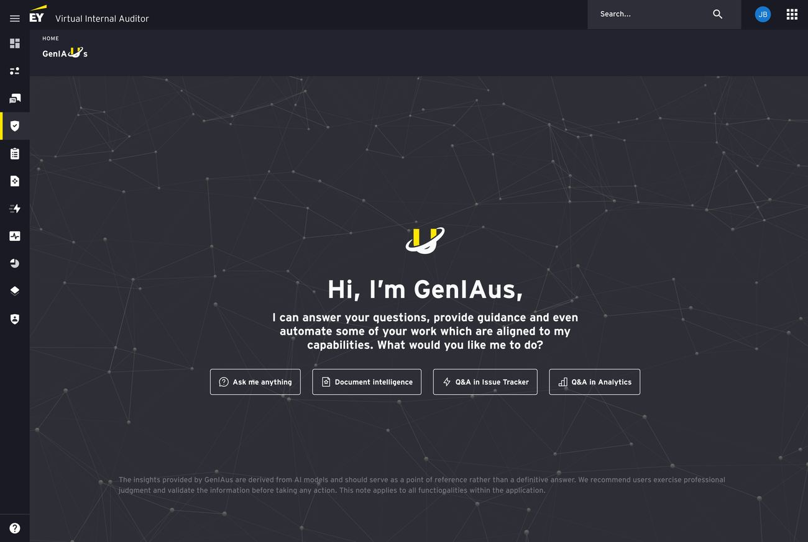
Fig 17Smart Quickstart — the redesigned landing state. Four clear capability entry points replace the blank chat, and the disclaimer below sets expectations about AI limitations upfront.
02
Prompt Scaffolding — making AI interactions purposeful.
AccessibilityReduce reliance on prior knowledge
The Problem
Users didn't know how to prompt the AI effectively
Enterprise users aren't ChatGPT power users — needed guidance
The Decision
Persistent contextual prompt suggestions at the bottom of chat
Tailored to active feature mode, updates with context
Tap a suggestion to start, then refine
Why It Works
Turns a blank text field into a guided interaction
Barrier drops from "compose from scratch" to "select and customize"
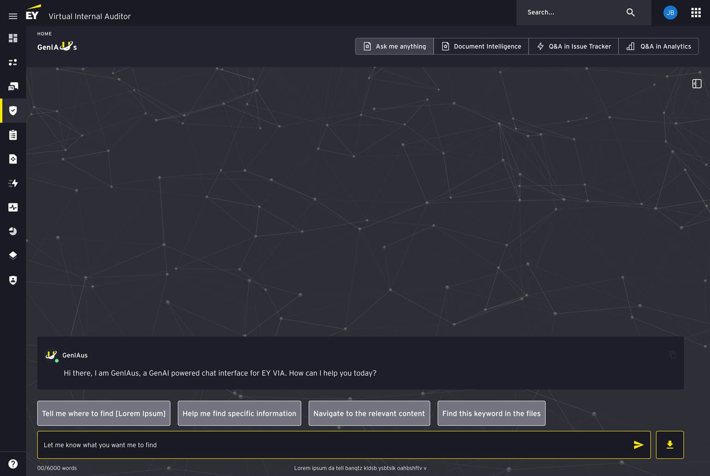
Fig 18Prompt scaffolding in action. Contextual suggestion chips beneath the input field reduce the blank-page problem and teach users the system's language through use.
03
Conversation History — continuity and confidence.
The Problem
No memory — every session started fresh
Multi-week engagements lost context between sessions
Auditors forced to repeat queries
The Decision
Collapsible sidebar, last 10 chats with preview text
Resume any previous thread
New Chat button for starting fresh
Why It Works
Continuity auditors expect from any modern tool
Visible persistence builds confidence in detailed queries
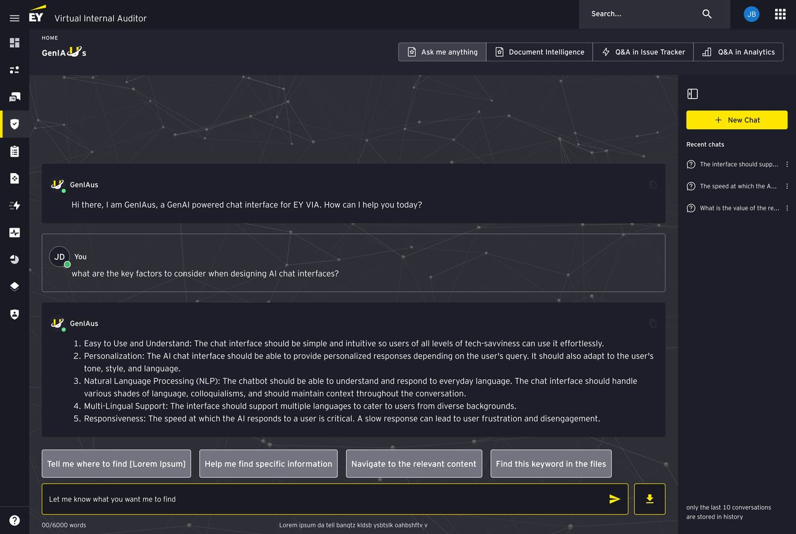
Fig 19Conversation history panel — recent chats are always accessible, giving auditors continuity across sessions and confidence that their work persists.
04
Document Intelligence — working with your files.
AccessibilityProgressive disclosure
The Problem
Flat, unsearchable list of every file
No filtering, no pagination, no feedback on selection
The Decision
Two tabs: "Use existing files" and "Upload a new file"
Existing files: progressive disclosure — audit name first, then paginated list
Upload: drag-and-drop with clear constraints
Why It Works
Separates two intents — existing files vs. new upload
Optimizes each path independently
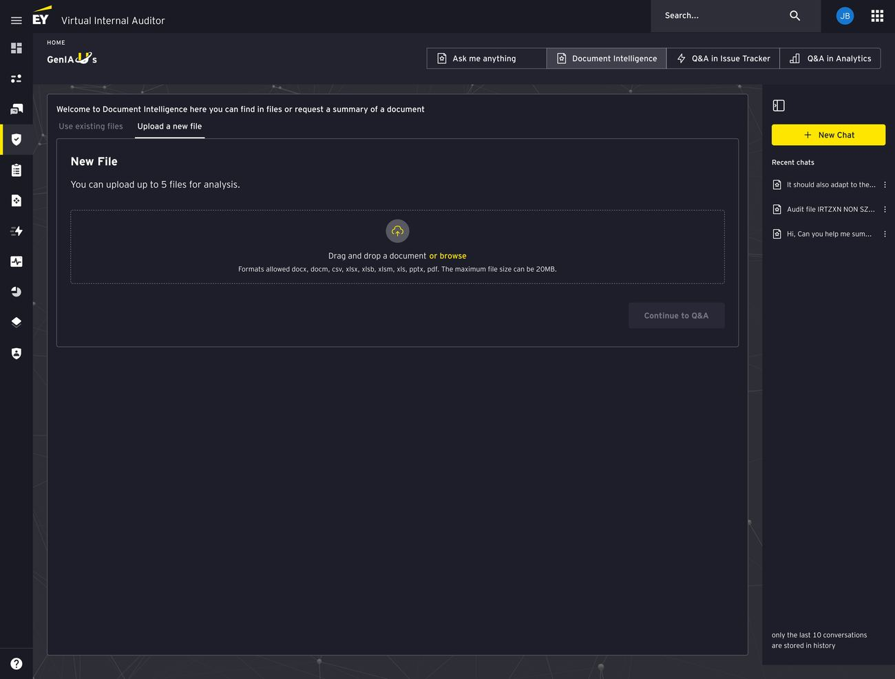
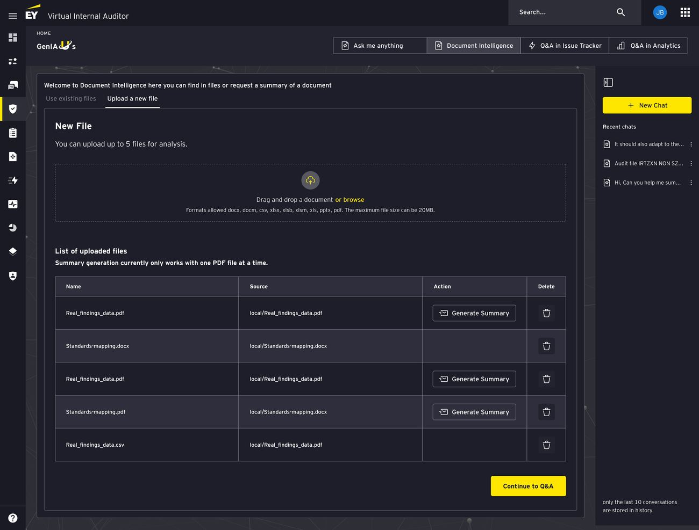
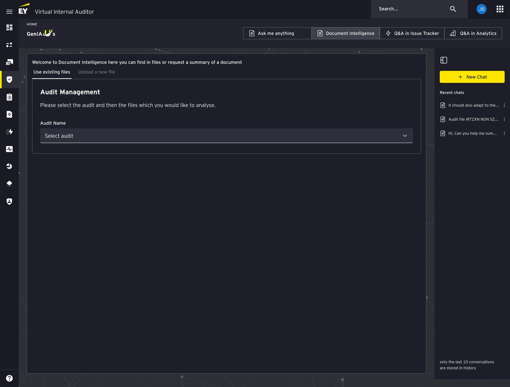
Hi-fi 01 — Use existing files tab. Audit Management dropdown drives progressive disclosure: select an audit first, then surface only that audit's files in a paginated table with search.
01 / 03
05
Smarter data tables — focused review.
The Problem
Single scrolling list — no filter, search, or pagination
Focused analysis meant scanning every row manually
The Decision
Search, pagination, and clear column headers
Inline actions (Generate Summary) per row
"Continue to Q&A" button once files are selected
Why It Works
Respects the user's time — no one should scroll past 60 irrelevant files to find one document.
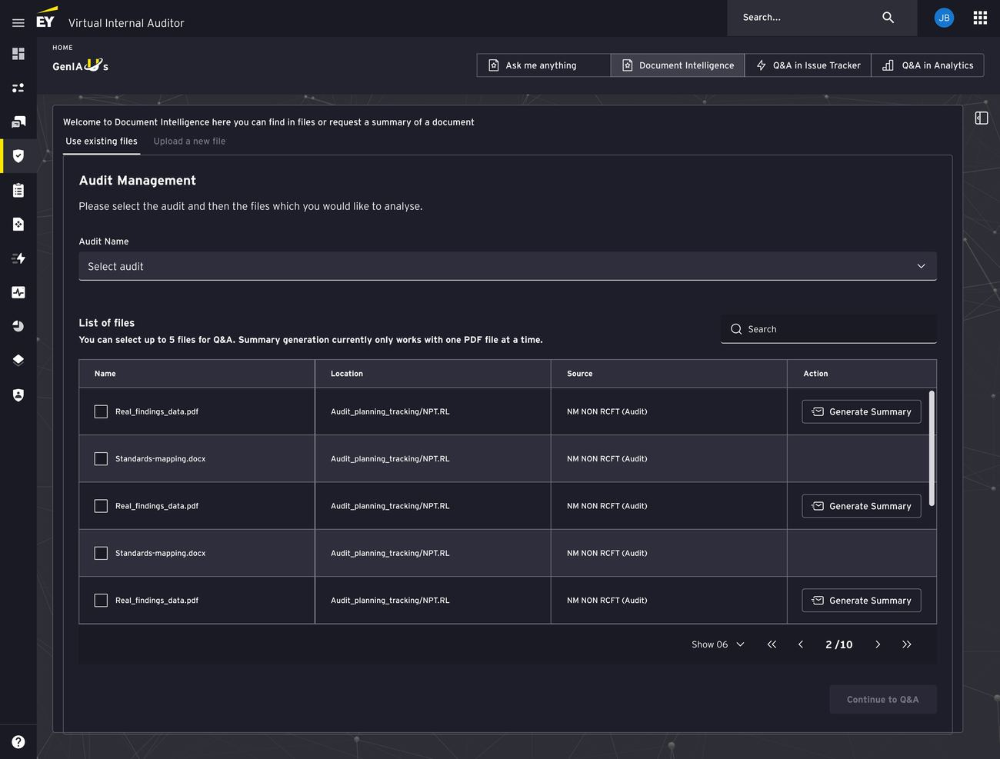
Fig 20Redesigned data tables with search, pagination, and inline Generate Summary actions — turning a wall of files into a focused review experience.
06
Visibility of system status — no more guessing.
AccessibilityMake state perceivable
The Problem
Zero feedback during processing
Users unsure if the system was working, broken, or finished
The Decision
Full-screen loading state with progress indicator
Background dimmed to block interaction mid-process
Toast notification confirms completion
Why It Works
Nielsen's #1 heuristic — silence reads as failure past 30s
Fig 21System status visibility — loading state with progress bar over a dimmed background, toast confirming generation. Replaces the beta's silent processing and maintains trust during longer operations.
07
Persona selection — tailored AI perspectives.
The Problem
Stakeholders (audit managers, compliance, CROs, IT risk) need different analysis from the same data
One-size-fits-all AI response served no one well
The Decision
Persona modal with 4 personas, clear focus-area descriptions
A UX solution to a prompt-engineering problem — the interface handles the context-switching instead of the user.
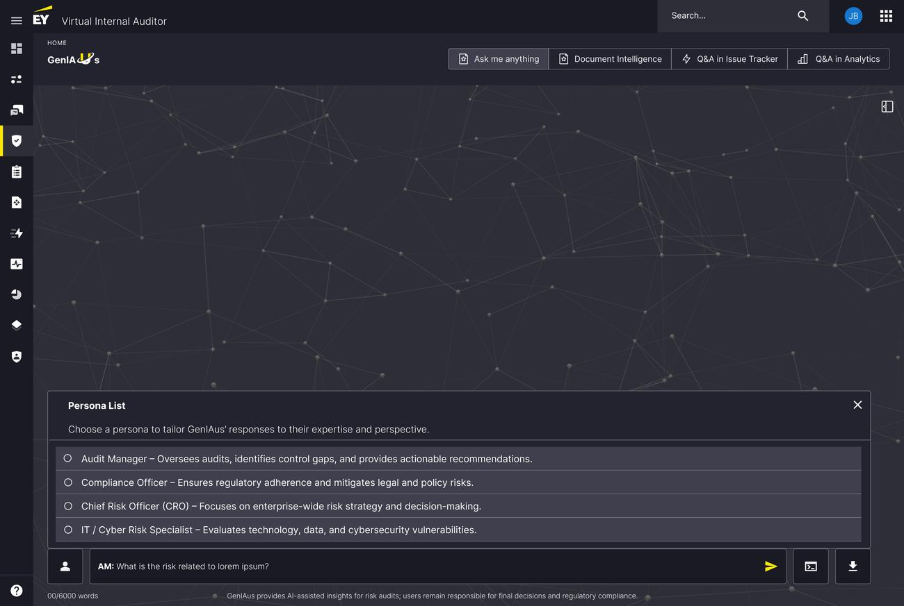
Fig 22Persona selection — users choose an analytical lens (Audit Manager, Compliance Officer, CRO, IT/Cyber Risk) that tailors GenIAus's response style. The persona prefix in the input field confirms which lens is active.
08
Prompt Library — institutional knowledge at your fingertips.
AccessibilityReduce memory burden
The Problem
Advanced users wanted proven, reusable prompts
Org wanted to standardize AI use across teams
The Decision
Searchable Prompt Collection modal, two tabs
"My Prompts" (personal, 7/25 used) and "System Prompts" (org-wide, 25 available)
Domain-specific, ready to run
Why It Works
Bridges individual productivity and org standardization: users get a head start, the org gets consistency.
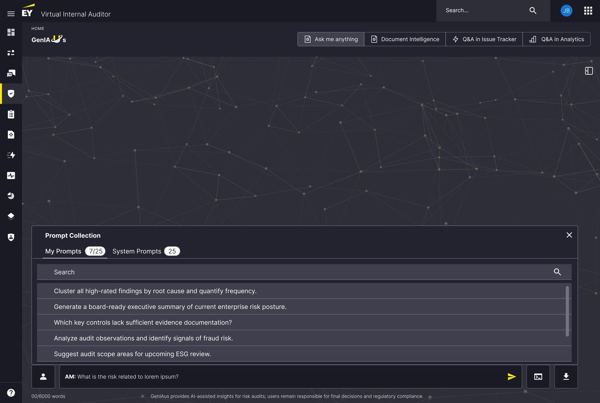
Fig 23Prompt library — personal and system-level prompts, searchable, domain-specific. Bridges individual productivity with organizational consistency.
07 — Accessibility
Accessibility wasn't a pass at the end. It was the design constraint.
In a regulated audit workflow, accessibility and transparency turned out to be the same problem wearing different names — telling every auditor what the system can do, what state it is in, and what happens next.
WCAG used as a design constraint, not a compliance pass run against a finished interface.
Accessibility was a practical part of making GenIAus trustworthy, not a separate layer applied after the redesign. Auditors work where ambiguity is risk, so the decisions that made the AI legible were the same ones that made it operable: descriptive labels in place of vague feature names, structured Quickstart options and prompt suggestions to cut cognitive load, and visible processing states so nobody had to guess whether the system was working.
WCAG 2.2 organises accessible design around four principles — content should be perceivable, operable, understandable and robust. Those four describe what a cautious auditor needs from an AI system almost exactly, which is why the criteria worked as a design filter rather than a checklist. Every barrier I could name mapped to a pattern the product already needed.
Accessibility as a system rule
Cognitive load→Progressive disclosure
Unfamiliarity→Prompt scaffolding
Ambiguity→Clear labelling
Uncertainty→System status
Trust→AI transparency
The criteria, and what they changed
Contrast, and never colour alone
Text, input labels, component boundaries and selected states were designed for readable contrast, and state was carried by label, icon and structure rather than colour. AA asks for 4.5:1 on body text, 3:1 on large text, and 3:1 on the visual information needed to identify a control and the state it is in.
1.4.31.4.11
Keyboard reach, and a focus state you can see
Quickstart cards, chat history, document tables, persona selection and the prompt-library modal are all reachable by keyboard with a visible focus state. Focus cannot disappear behind the processing overlay or a modal layer — orientation survives the deepest part of the workflow, which is exactly where losing it costs the most.
2.1.12.4.72.4.11
Explicit actions, targets you can hit
“Find in Files” became a label that says what it does. Prompt suggestions, persona descriptions and upload constraints removed the assumption of prior AI knowledge. Interactive controls were sized and spaced against the 24×24 CSS pixel minimum WCAG 2.2 sets at AA, subject to its exceptions.
2.5.83.3.2
Status the system announces, not status you infer
Full-screen processing feedback, progress indicators and completion toasts made AI activity visible. The implementation note that travels with them: these need to be exposed as programmatically determinable status messages, so a screen-reader user gets the same update without focus having to move to receive it.
4.1.3
Treating WCAG as a constraint rather than a checklist meant accessibility reinforced the thing the product was already trying to earn — trust, control, and an equal footing for every auditor using it.
08 — Collaborating With Engineers
Not a handoff. A shared problem.
Redesigning a live product with 8 developers required a different kind of collaboration. Here's what worked.
Findings framed as shared problems got buy-in; prescriptions got resistance.
Understood constraints first — sat with engineering on API/backend limits before proposing changes
Framed problems, not fixes — "Users can't find their files" gets buy-in; "Add pagination" gets resistance
Shipped in 3 incremental sprints — scaffolding, Document Intelligence, then persona selection, using Miro as the alignment tool
09 — Impact
From a beta auditors avoided to a tool they requested.
−40%Task completion time across the redesigned flows
+35%Adoption rate after iteration ship
+84%Time spent on platform (deeper engagement, not friction)
These patterns became EY's broader AI product design standards.
10 — Reflection
What I'd do differently. What it taught me.
Transparency isn't a feature in regulated AI — it's the foundation everything else stands on.
What I'd do differently
More upfront co-design with auditors. Workflow nuances only surface when you watch someone do the real work over days, not hours.
Earlier investment in a design system. Defining patterns as I went cost consistency I'd have kept with an upfront design-system sprint.
What it taught me
Transparency is structural, not optional. In regulated domains, every decision has to survive a regulator's questions.
Context retention improves efficiency. History, file persistence, and persona memory aren't features — they're respect for the user's time.
The best AI interface is invisible. When GenIAus works, auditors think about the audit, not the interface — the trust promised up top, delivered.
I'm open to senior product design roles, advisory work, and selective collaborations. Whether you have a defined brief or a fuzzy problem space, let's talk it through.